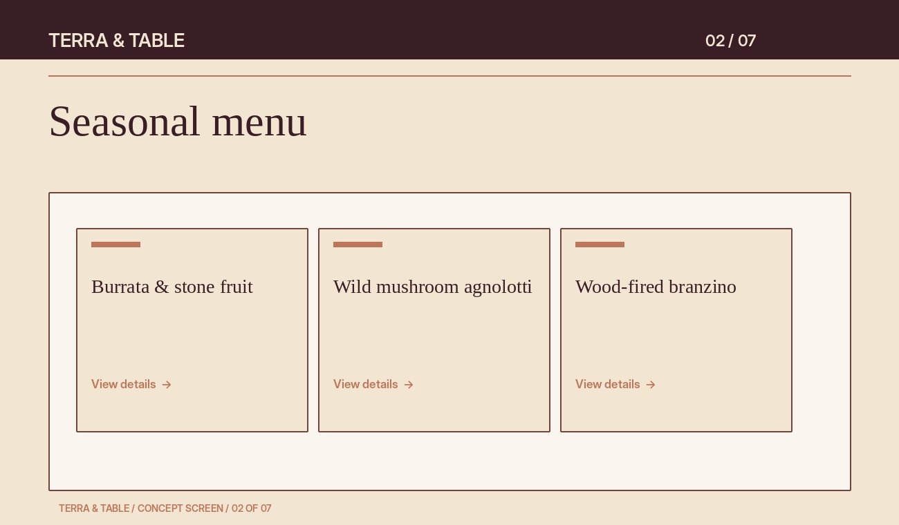
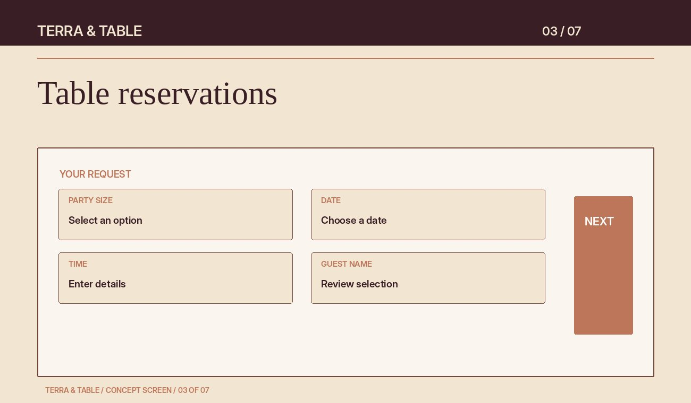
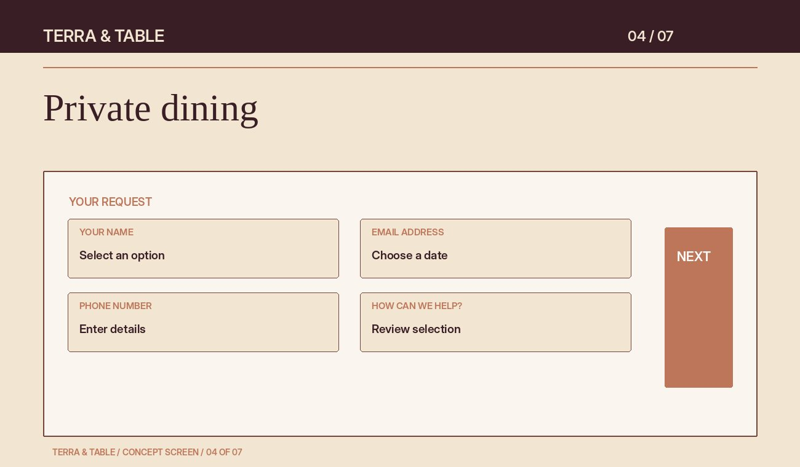
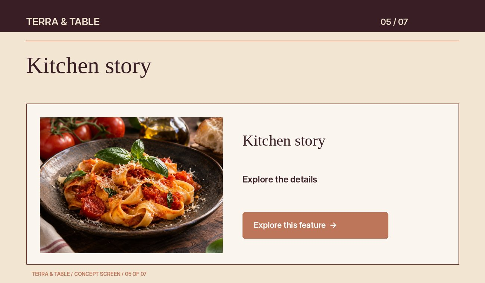
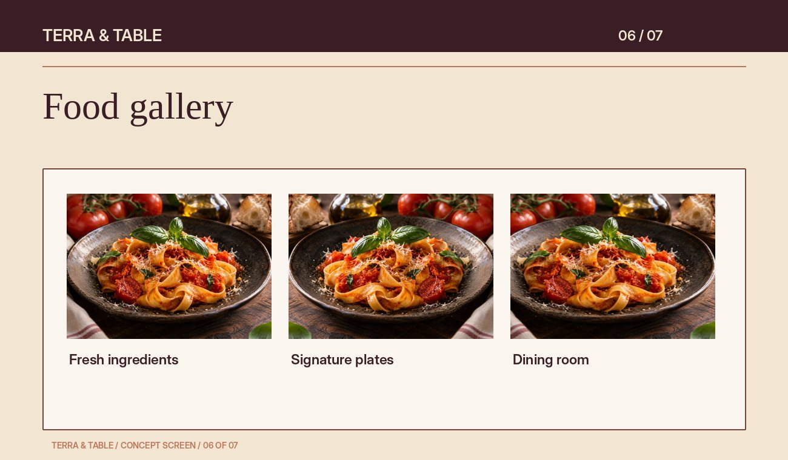
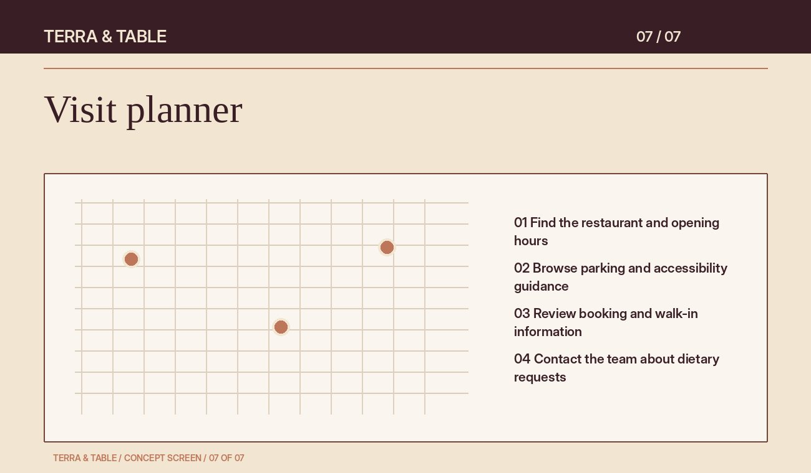
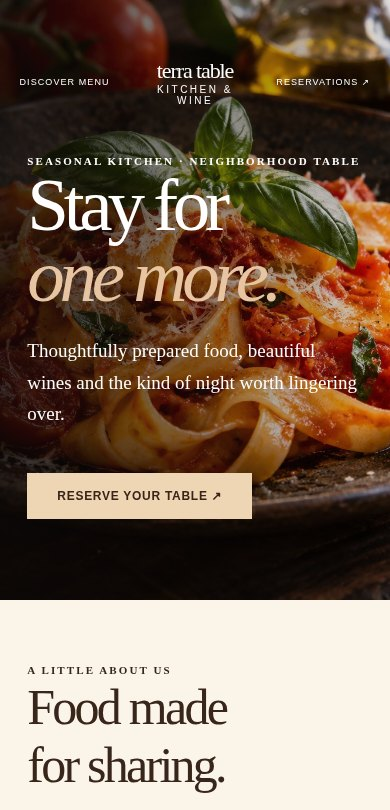

CONCEPT BUILD / Restaurant
Terra & Table
Good food. Better company.
THE BUSINESS
A digital home
with a clear purpose.
About this business
Terra & Table is a sample restaurant focused on seasonal Italian dishes, relaxed dinners and private gatherings. Its website is designed for diners comparing menus, dietary options and table availability on their phones. The concept starts with those customer needs and gives each section a specific role in the decision.
What this website includes
The experience brings together seasonal menu, table reservations, private dining, kitchen story, food gallery, visit planner. A #ae6943 accent palette, industry-specific imagery and a warm editorial visual direction build a recognizable identity. Clear navigation connects discovery, consideration and action.
These are illustrative website designs and proposed workflows. Booking, payments, live inventory, maps and submissions require the appropriate provider and configuration in a real client project. No customer data is collected by the section previews.
RESTAURANT / RESERVATIONS / ORIGINAL CONCEPT
A table worth making time for
Menus, reservations and private dining each have a natural path.
The business opportunity Guests browse what matters most, then make the next move without hunting for information.
THE WEBSITE, SECTION BY SECTION
Every section
has a job to do.
Explore the interface alongside the thinking behind it. These are rendered concept previews, not screenshots of a live client website.
01 / FIRST IMPRESSIONS
The homepage hero
The first screen immediately introduces Terra & Table, the type of business and the next useful action. The headline, restaurant photography and focused call to action establish a coherent first impression.
Why it helps
Visitors should not have to guess what is offered. A clear opening helps people orient themselves and continue toward find your table. On smaller screens, content stacks so the message remains easy to read and the next step stays accessible.

EXPLORE THIS FEATURE ↗02 / THE EXPERIENCE
Seasonal menu
The seasonal menu presents seasonal Italian dishes, relaxed dinners and private gatherings in a clear, approachable format. The design groups related information into short blocks so visitors can compare options and understand the business without reading a wall of marketing copy.
How it helps the business
Terra & Table needs to serve diners comparing menus, dietary options and table availability on their phones. This section addresses that decision with relevant detail, a consistent visual hierarchy and a visible path to find your table.
A better customer experience
People can quickly find the information that matters to them and decide whether to continue. Descriptive headings and readable spacing make the page useful on a phone as well as on a larger screen.
Clearer information can support more confident decisions and reduce preventable questions. Its contribution would be evaluated through service engagement, relevant inquiries and feedback from the people handling customer conversations.

EXPLORE THIS FEATURE ↗03 / THE EXPERIENCE
Table reservations
This table reservations gives visitors a structured way to express interest in seasonal Italian dishes, relaxed dinners and private gatherings. It collects the relevant service, timing and contact details in a short sequence instead of asking customers to compose an unstructured message.
How it helps the business
For Terra & Table, a better brief means fewer clarification emails and a more useful first conversation. The final scope would define the required fields and connect a suitable provider; this preview does not confirm availability or submit requests.
A better customer experience
Visitors can see what information is needed before they begin. Clear labels, helpful next-step language and a mobile-friendly layout reduce uncertainty, especially when someone is comparing several businesses.
The potential benefit is fewer abandoned inquiries and less administrative back-and-forth. A production launch would track completed requests and response times to judge whether the journey is working.

EXPLORE THIS FEATURE ↗04 / THE EXPERIENCE
Private dining
The private dining presents seasonal Italian dishes, relaxed dinners and private gatherings in a clear, approachable format. The design groups related information into short blocks so visitors can compare options and understand the business without reading a wall of marketing copy.
How it helps the business
Terra & Table needs to serve diners comparing menus, dietary options and table availability on their phones. This section addresses that decision with relevant detail, a consistent visual hierarchy and a visible path to find your table.
A better customer experience
People can quickly find the information that matters to them and decide whether to continue. Descriptive headings and readable spacing make the page useful on a phone as well as on a larger screen.
Clearer information can support more confident decisions and reduce preventable questions. Its contribution would be evaluated through service engagement, relevant inquiries and feedback from the people handling customer conversations.

EXPLORE THIS FEATURE ↗05 / THE EXPERIENCE
Kitchen story
The kitchen story introduces the restaurant’s culinary direction and staff, helping diners understand the food and atmosphere behind the menu.
How it helps the business
Terra & Table needs to serve diners comparing menus, dietary options and table availability on their phones. This section addresses that decision with relevant detail, a consistent visual hierarchy and a visible path to find your table.
A better customer experience
People can quickly find the information that matters to them and decide whether to continue. Descriptive headings and readable spacing make the page useful on a phone as well as on a larger screen.
Clearer information can support more confident decisions and reduce preventable questions. Its contribution would be evaluated through service engagement, relevant inquiries and feedback from the people handling customer conversations.

EXPLORE THIS FEATURE ↗06 / THE EXPERIENCE
Food gallery
The food gallery organizes visual examples around the choices customers actually make. For a business offering seasonal Italian dishes, relaxed dinners and private gatherings, imagery needs context: what is shown, who it is suitable for and what the visitor can do next.
How it helps the business
Terra & Table can use this section to demonstrate its style and help visitors identify a fit before making contact. Real project photography and approved descriptions would replace illustrative concept imagery at launch.
A better customer experience
Scannable captions and consistent image proportions make the collection easier to explore. Visitors can move from inspiration to a relevant service or inquiry without losing their place in a long, unstructured photo feed.
This can improve the quality of incoming inquiries because customers arrive with a clearer reference. The useful measure would be how often collection views lead to service exploration or a qualified conversation.

EXPLORE THIS FEATURE ↗07 / THE EXPERIENCE
Visit planner
The visit planner presents seasonal Italian dishes, relaxed dinners and private gatherings in a clear, approachable format. The design groups related information into short blocks so visitors can compare options and understand the business without reading a wall of marketing copy.
How it helps the business
Terra & Table needs to serve diners comparing menus, dietary options and table availability on their phones. This section addresses that decision with relevant detail, a consistent visual hierarchy and a visible path to find your table.
A better customer experience
People can quickly find the information that matters to them and decide whether to continue. Descriptive headings and readable spacing make the page useful on a phone as well as on a larger screen.
Clearer information can support more confident decisions and reduce preventable questions. Its contribution would be evaluated through service engagement, relevant inquiries and feedback from the people handling customer conversations.

Actual mobile-width website previewMADE FOR THE MOMENT
The whole experience.
A smaller screen.
Customers often discover a restaurant while doing something else. A responsive design keeps the message, service choices and next action readable, with generous tap targets and a layout that adapts to available space.
This mobile device mockup demonstrates the same brand direction. Production usability checks would cover navigation, form labels, keyboard access and the handoff to any external service.
THE BUSINESS CASE
Why this website helps this business.
Make the choice clearer.
Organized information about seasonal Italian dishes, relaxed dinners and private gatherings helps visitors decide whether the business fits their needs before they get in touch.
Reduce the friction.
A visible path to find your table can turn browsing into a useful inquiry while reducing unnecessary calls and repeated explanations.
Build a consistent presence.
A coordinated design helps Terra & Table present its offer with care. These are potential benefits, with no guaranteed or measured revenue claims.
BUILT AROUND YOUR BUSINESS
Inspired by this approach?
Every business has different priorities. Explore our transparent packages, then tell us which parts of this concept would work for you. We will recommend a practical scope and quote.
LET’S MAKE IT YOURS